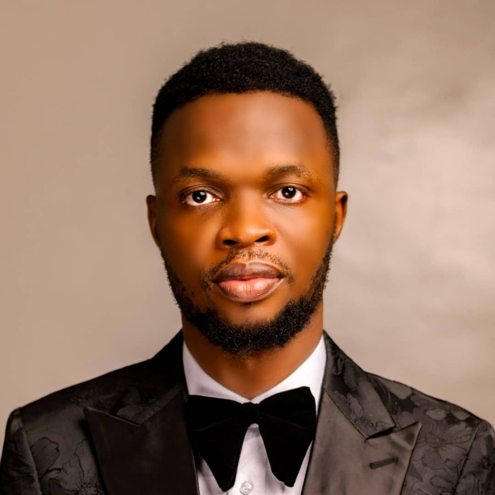

About Me
I am Chidozie Abraham Ugwu, a proud Nigerian born on March 18, 1987. As a passionate lifelong learner, I am currently advancing my knowledge and skills at AltSchool, where I am identified by the AltSchool ID ALT/SOE/024/0300. With a strong drive for excellence and continuous growth, I embrace new challenges and opportunities that push me to improve. My journey is fueled by curiosity, resilience, and a commitment to making a meaningful impact in my field and beyond.
Biography
Born and raised in Osun State, I am the first child in a family of five, a unique position that has shaped my sense of responsibility and leadership. My heritage is a rich blend of cultures, as I am the son of an Igbo father and a Yoruba mother. Growing up in this culturally diverse environment taught me the importance of unity, adaptability, and embracing different perspectives. I take pride in my ability to communicate fluently in English, Yoruba, and Igbo, a skill that allows me to connect with people from various backgrounds seamlessly.
In pursuit of my passion for technology, I studied Computer Science at the University of Nigeria, where I graduated in 2018. During my time at the university, I developed a deep love for working with computers and exploring how they can solve real-world problems. My academic journey equipped me with the technical skills and problem-solving mindset needed to thrive in the tech industry. Beyond academics, my love for sports, particularly basketball, has played a significant role in shaping my discipline and teamwork skills, which I apply in both my personal and professional life.
A fervent Chelsea FC supporter, I find joy and inspiration in the beautiful game of football, which teaches resilience, strategy, and the value of collaboration. My passion for sports complements my technical pursuits, creating a balanced lifestyle that keeps me motivated and focused on my goals. With a deep appreciation for my roots and an unwavering drive to excel, I aim to contribute meaningfully to my community and beyond through technology and innovation.
Why I joined AltSchool Cloud Engineering Program?
The AltSchool Cloud Engineering Program presents a unique opportunity to combine my passion for solving problems with technology with my aspiration to become a leading cloud engineer. From a young age, I have been fascinated by how technology transforms challenges into opportunities, making life easier and businesses more efficient. My dedication to identifying and resolving real-world problems has driven me to continually explore innovative solutions and cutting-edge tools. AltSchool's hands-on approach to learning aligns perfectly with my belief that practical experience is the most effective way to develop skills that create meaningful impact. Joining this program is the next step in my journey to use technology as a powerful tool for problem-solving on a global scale.
My love for cloud computing stems from its incredible ability to scale and empower businesses of all sizes. The cloud is a game-changer, enabling faster deployment, seamless integration, and cost-efficient management of resources. I am drawn to its potential to revolutionize industries and enhance productivity. Through the AltSchool Cloud Engineering Program, I aim to deepen my understanding of cloud architecture, DevOps practices, and cloud-native technologies, equipping myself to design robust and scalable systems. The program's emphasis on both theory and practice will provide me with the technical foundation and confidence needed to contribute to groundbreaking innovations in the cloud space.
Beyond personal growth, my vision is to establish a world-class tech firm in Africa that leverages cloud technology to solve pressing local challenges while competing globally. Africa is brimming with untapped potential and creative talent, and I believe technology is the key to unlocking it. Through this program, I hope to gain not only technical expertise but also the mentorship and network needed to realize my dream of building a sustainable, impactful tech company. AltSchool's mission to nurture problem-solvers and leaders resonates deeply with my ambition to make a lasting difference in Africa's tech landscape.
My Goals for the School of Engineering
My primary goal for joining the School of Engineering is to immerse myself in an environment that fosters growth and enables me to leave a meaningful impact. I am eager to learn from experienced mentors, collaborate with like-minded peers, and engage in hands-on projects that challenge my creativity and technical skills. Through this journey, I aim to deepen my understanding of engineering principles while contributing innovative solutions to real-world problems. I aspire to not only grow as an individual but also inspire others by sharing knowledge and embracing the values of hard work, curiosity, and perseverance.
Another significant goal is to build a successful and fulfilling career in engineering. The School of Engineering offers a unique platform to acquire cutting-edge skills and stay updated with industry trends, ensuring I am well-prepared for the demands of the modern engineering landscape. I am committed to leveraging the education and experience gained here to excel in my career and create solutions that have a lasting impact on industries and communities. Whether through groundbreaking projects, leadership roles, or mentorship, I aim to establish myself as a dedicated professional making meaningful contributions to the field of engineering.
Finally, I am driven by the desire to be part of the School of Engineering’s success story. I want to contribute to its reputation as a hub of excellence by actively participating in its programs, initiatives, and community engagements. By excelling academically, collaborating on impactful projects, and representing the school positively, I hope to leave a legacy that reflects the school’s values and mission. My goal is not just to benefit from the institution but to give back by helping others achieve their dreams, further strengthening the school’s position as a leader in engineering education.